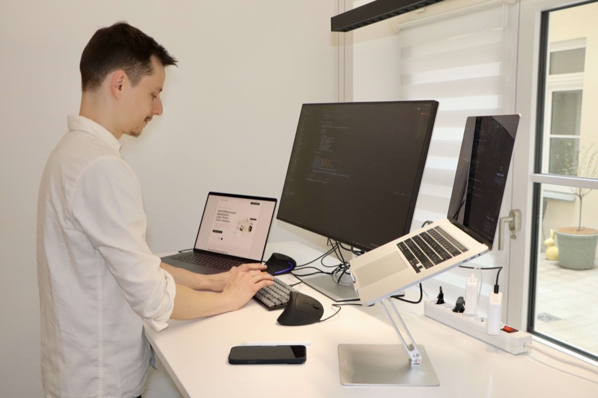

Dokumentenarbeit, automatisiert. Wo es sich lohnt.
Berichte, Protokolle, Verträge, Akten: Ein großer Teil Ihrer Bürozeit geht für das Abtippen, Übertragen und Suchen drauf, das niemand abrechnet. Wir sehen uns Ihre Abläufe an, beziffern, was sich davon automatisieren lässt, und sagen Ihnen ehrlich, wo es sich nicht lohnt. Sie entscheiden, was umgesetzt werden soll.
Zertifizierungen
Potenzial-Analyse · Bericht4 Schritte
01Ist-Aufnahme
Abläufe, Vorlagen, Systeme
erhoben
02Engpassanalyse
Wo Zeit und Qualität verloren gehen
6 Befunde
03Empfehlung
Automatisieren, umstellen oder lassen
neutral
04Reihenfolge
Womit anfangen, was hat Zeit
3 Phasen
Empfehlung ohne Eigeninteresse, auch wenn nichts zu tun ist.NeutralTechnologieoffen
Typisches Ergebnis
6 Befunde, 3 sofort umsetzbar
Warum es hakt
Das Problem ist selten die Technik. Es ist die Entscheidung.
Dass sich einiges automatisieren ließe, ahnen die meisten Büros. Woran es fehlt, ist eine belastbare Grundlage: Was lohnt sich wirklich, was kann die vorhandene Software schon, und wem kann man dabei trauen?
Problem 01 · Wo anfangen?
Sie wissen, dass Zeit verloren geht. Nur nicht genau wo.
Notizen und Aufnahmen abtippen, Inhalte in die Vorlage übertragen, Dateien und Anlagen zuordnen. Jede Aufgabe für sich wirkt klein. Zusammen sind es Tage.
Notizen und Aufnahmen abtippenje Termin3,5 h/Wo
Inhalte in die Dokumentvorlage übertragenje Vorgang4,2 h/Wo
Dateien & Anlagen zuordnen und benennenje Vorgang2,1 h/Wo
Problem 02 · Vertraulichkeit
Ihre Unterlagen gehören nicht in irgendeine Cloud
Verträge, personenbezogene Daten, Unterlagen Ihrer Auftraggeber, teils rechtlich bindend. Das schließt die schnelle Standardlösung oft von vornherein aus.
DSGVOVerschwiegenheitbleibt im Haus
Problem 03 · Interessenlage
Jeder Anbieter empfiehlt zufällig sein eigenes Produkt
Wer die Software verkauft, kann Ihnen schlecht sagen, dass Sie sie nicht brauchen. Eine unabhängige Einschätzung bekommen Sie dort nicht.
„Nein.“
Auch das ist ein legitimes Analyseergebnis. Wir empfehlen keine Software, die Sie nicht brauchen.
Problem 04 · Standardsoftware
Von der Stange gibt es Ihren Ablauf nicht
Große Anbieter decken inzwischen vieles ab. Für die Art, wie Ihr Büro seine Dokumente erstellt, baut trotzdem niemand ein Modul. Der Markt dafür ist zu schmal.
Unser Angebot
Wie sieht unsere Zusammenarbeit aus?
Wir beginnen mit einer Analyse, nicht mit einem Angebot für Automationssoftware. Die vier Bereiche bauen zwar aufeinander auf, aber jeder steht für sich: Nach jedem entscheiden Sie neu, ob es weitergeht, und Sie beauftragen nur, was Sie wirklich brauchen.
Vorab
Erstgespräch, 30 Minuten, kostenlos. Sie schildern, was in Ihrem Büro am meisten Zeit frisst. Wir sagen Ihnen offen, ob sich eine Analyse bei Ihnen überhaupt lohnt. Manchmal lautet die Antwort schon hier „eher nicht“.
Potenzial-Analyse
Proof of Concept
Umsetzung
Betrieb
Erst die Klarheit, dann alles Weitere
Wir sehen uns Ihre Abläufe an: wie ein Vorgang bei Ihnen entsteht, welche Vorlagen und Systeme im Spiel sind, wo Zeit verloren geht. Daraus wird eine schriftliche, technologieneutrale Empfehlung, ausdrücklich einschließlich der Punkte, an denen sich Automatisierung nicht rechnet oder Ihre vorhandene Software schon ausreicht. Der Bericht gehört Ihnen, unabhängig davon, ob wir danach weiterarbeiten.
Analyse Ihrer Abläufe, vor Ort oder remote
Schriftliche Empfehlung, priorisiert nach Aufwand und Nutzen
Ehrliches Feedback auch dann, wenn sich etwas nicht lohnt
Umfang und Preis vorab schriftlich
Analysebericht · InhaltIhr Ergebnis
01Bestandsaufnahme
So läuft ein Vorgang heute bei Ihnen
dokumentiert
02Befunde
Je Befund: Zeitaufwand und Häufigkeit
bewertet
03Empfehlung je Befund
Automatisieren, umstellen oder lassen
neutral
04Reihenfolge
Womit anfangen, was hat Zeit
3 Phasen
Der Bericht gehört Ihnen, auch ohne weitere Zusammenarbeit.NeutralTechnologieoffen
Einen Ablauf echt bauen, bevor Sie entscheiden
Aus der Analyse wählen wir gemeinsam den Ablauf mit dem besten Verhältnis von Aufwand und Wirkung und bauen ihn tatsächlich, mit Ihren eigenen, anonymisierten Unterlagen. Am Ende sehen Sie an Ihrem Material, ob das Ergebnis Ihren Ansprüchen genügt. Erst danach steht die Frage nach einem größeren Projekt im Raum.
Workshop, in dem der Ablauf und die Abnahmekriterien festgelegt werden
Aufbau auf unserer Hardware, ohne Eingriff in Ihre IT
Kalibrierung mit Ihren eigenen Beispieldaten
Kein Weiterbau ohne Ihre ausdrückliche Entscheidung
Ablauf · Termin → Dokumententwurfaktiv
Aufnahme
Sprachnotiz und Anlagen vom Termin
Transkription
Gesprochenes wird zu Text
Entwurf
Inhalte zugeordnet, eingesetzt in Ihre Vorlage
Ihre Prüfung
Fachliche Bewertung und Freigabe, nichts geht ohne Sie raus
Ablage
Fertiges Dokument zum Vorgang
Das System liefert Entwürfe. Die Aussage bleibt Ihre.Freigabedurch Sie
Gebaut wird, was sich in der Analyse gerechnet hat
Je nach Befund heißt das: ein automatisierter Ablauf, eine Schnittstelle zwischen zwei Systemen, ein schlankes Web-Werkzeug oder eine lokale KI-Anwendung. Vieles davon braucht übrigens gar keine KI; klassische Logik und saubere Schnittstellen reichen oft völlig aus, um spürbar Zeit zu sparen. Wo Ihre Unterlagen es erfordern, läuft alles auf Hardware in Ihrem Haus, ohne Verbindung nach außen.
Automatisierte Abläufe, Schnittstellen und individuelle Web-Tools
Auch ohne KI, wo klassische Automatisierung genügt
Auf Wunsch vollständig lokal, ohne Cloud-Übertragung
Klar abgegrenzter Umfang, auf Basis der Analyse
Datenfluss · Betrieb im HausModell läuft
Ihr Netzwerk
Sprachmodell
Dokumentenverarbeitung
Wissensdatenbank
Unterlagen → Entwurf · bleibt im Haus
Externe Cloud: keine Verbindung
Auf Ihren Geräten oder auf Hardware, die wir bei Ihnen einrichten.SouveränIhre Daten
Läuft weiter, auch ohne uns
Mit der Übergabe bekommen Sie Dokumentation, Einweisung und die Zugänge. Die Lösung läuft in Ihrem Haus und gehört Ihnen. Ob wir danach Support, Updates und Weiterentwicklung übernehmen, entscheiden Sie. Es gibt keinen Mechanismus, der Sie an uns bindet.
Dokumentation und Einweisung Ihrer Mitarbeiter
Support, Updates und Monitoring auf Wunsch
Weiterentwicklung, wenn sich Ihre Abläufe ändern
Optional, Sie entscheiden nach der Übergabe
Vorgangsübersicht
128Vorgänge
14offen
96 %Fristen gehalten
Demo
Von der Frage zur belegten Antwort
Ein Beispiel für das, was am Ende einer Analyse stehen kann, hier bei einem Anlagenbauer: Ein Techniker wählt den Kunden und beschreibt eine Störung in einem Satz. Zurück kommt keine allgemeine Auskunft, sondern die Antwort aus den eigenen Serviceberichten des Hauses, mit Datum, Techniker und Fundstelle. Also das Wissen, das sonst nur einzelne Kollegen im Kopf haben. Bei Ihnen heißen die Unterlagen anders, das Prinzip bleibt dasselbe, und alles läuft auf Hardware im eigenen Haus.
Kunden, Anlagen und Berichte stammen aus einem realitätsnahen Demo-Bestand, es sind keine echten Kundendaten.
Über uns
Wer Ihnen gegenübersitzt
Kein Vertrieb, keine Zwischenebene. Philipp Anders koordiniert jedes Projekt selbst und bleibt Ihr Ansprechpartner, von der ersten Analyse bis zur Übergabe.
Gründer
Philipp Anders
Gegründet wurde smartwandler von Philipp Anders, Diplom-Ingenieur mit über zehn Jahren Erfahrung im Aufbau und Betrieb großer IT-Systeme, unter anderem bei Sopra Steria, Deloitte, Mercedes-Benz, Volkswagen und im öffentlichen Sektor.
Er koordiniert jedes Projekt selbst, von der ersten Analyse bis zur Übergabe.
Deshalb gibt es bei uns keine Weitergabe an ein Team, das Ihr Büro nie gesehen hat, und keine Ebene, die zwischen Ihnen und der Umsetzung sitzt.
Uns interessiert, wie ein Vorgang bei Ihnen tatsächlich durchläuft, nicht wie er im Handbuch stehen sollte.
Beratung
Erst zuhören. Dann urteilen.
Wir verkaufen keine Software, deshalb können wir Ihnen sagen, wenn sich etwas nicht lohnt.
Statt eines Standardansatzes sehen wir uns an, wie bei Ihnen tatsächlich gearbeitet wird: welche Vorlagen im Umlauf sind, wo nachgetippt wird, was schon einmal gescheitert ist.
Ihre Mitarbeiter binden wir früh ein: Was im Alltag nicht angenommen wird, spart am Ende keine Zeit.

Umsetzung
Wir können auch bauen, müssen es aber nicht.
Anders als reine Berater bleiben wir nicht bei der Empfehlung stehen: Wenn Sie umsetzen wollen, machen wir es selbst.
Analyse, Aufbau und Übergabe kommen aus einer Hand, ohne Weitergabe an ein fremdes Umsetzungsteam.
Das hält die Empfehlung ehrlich, weil wir uns an dem messen lassen müssen, was wir vorschlagen.
Uns geht es um Sicherheit, Datenschutz und Systeme, die auch in drei Jahren noch wartbar sind, ohne dass Sie dafür an uns gebunden sind.
Wen Sie sonst fragen könnten
Die Lücke zwischen Anbieter und großer Beratung
Softwareanbieter kennen ihr Produkt, aber nicht Ihr Büro. Große Beratungen liefern eine Folienstrecke und gehen wieder. Wir sitzen dazwischen.
Kriterium
Softwareanbieter
Große Beratung
smartwandler ✓
Empfiehlt auch mal, nichts zu kaufen
✕
~
✓
Sagt Ihnen, wenn Ihre vorhandene Software das schon kann
✕
~
✓
Setzt anschließend selbst um
✓
✕
✓
Umfang und Preis vorab schriftlich
~
✕
✓
Sie sprechen mit dem, der es baut
✕
✕
✓
Arbeitet auch dann, wenn Ihre Daten das Haus nicht verlassen dürfen
~
~
✓
Einordnung typischer Anbieterkatagorien aus Sicht kleiner und mittlerer Büros
Häufige Fragen
Antworten auf Ihre Fragen
Was Sie vor dem Erstgespräch wissen sollten, auch die unbequemen Punkte.
Was, wenn Sie zu dem Ergebnis kommen, dass sich nichts lohnt?
+
Dann steht das so im Bericht. Das ist kein Scheitern der Analyse, sondern ihr Ergebnis, und zwar eines, das Ihnen eine Fehlinvestition erspart. Genau deshalb ist die Analyse von der Umsetzung getrennt: Würden wir nur am Bauen verdienen, könnten Sie unserer Empfehlung nicht trauen. In der Praxis ist die Antwort selten ein glattes Nein, häufiger ein „diese zwei Dinge ja, die anderen vier nicht“.
Bleibt die fachliche Verantwortung bei mir?
+
Uneingeschränkt. Was wir bauen, erzeugt Entwürfe und Vorlagen. Eine fachliche Aussage trifft es nie. Jeder Text, jede Zusammenfassung, jedes Dokument geht erst raus, nachdem Sie es geprüft und freigegeben haben. Der Freigabeschritt ist fester Bestandteil jedes Ablaufs und lässt sich nicht überspringen. Die Technik nimmt Ihnen das Abtippen und Sortieren ab, nicht das Urteil. Bei Unterlagen, die vor Gericht Bestand haben müssen, ist das aus unserer Sicht die einzig vertretbare Bauweise.
Was passiert mit den Daten meiner Auftraggeber?
+
Wo es die Vertraulichkeit erfordert, läuft die Verarbeitung vollständig auf Geräten in Ihrem Haus. Die Unterlagen werden dabei zu keinem Zeitpunkt an einen externen Dienst übertragen, auch nicht an uns. Das ist technisch aufwendiger als eine Cloud-Lösung, aber bei vertraulichen Unterlagen, personenbezogenen Daten und Verschwiegenheitspflichten oft die einzige gangbare Variante. Wo diese Anforderung nicht besteht, sagen wir Ihnen das auch. Dann ist eine einfachere Lösung meist die bessere.
Was kostet die Zusammenarbeit?
+
Das hängt vom Umfang ab, und den legen wir vor jedem Schritt gemeinsam fest. Bevor Sie sich entscheiden, bekommen Sie Umfang und Preis schriftlich. Wir fangen bewusst mit der Analyse an, weil Sie danach wissen, worüber wir überhaupt reden, und weil sich der Aufwand einer Umsetzung vorher nicht seriös beziffern lässt. Die konkreten Zahlen für Ihren Fall besprechen wir im Erstgespräch, und das kostet Sie nichts.
Was, wenn meine vorhandene Bürosoftware das auch anbietet?
+
Dann sagen wir Ihnen das, und Sie sparen sich ein Projekt. Wir sehen uns in der Analyse ausdrücklich an, was Ihre bestehenden Programme bereits können und ob eine ungenutzte Funktion oder eine andere Konfiguration das Problem schon löst. Das kommt häufiger vor, als man denkt. Interessant wird es dort, wo für Ihren speziellen Ablauf kein Anbieter ein Modul baut, weil dieser Ablauf sich von Büro zu Büro unterscheidet. Genau dort liegt unser Ansatz.
Muss es unbedingt KI sein?
+
Nein, und das ist wichtiger, als es klingt. Viele Abläufe lassen sich mit klassischer Logik, sauberen Schnittstellen und guten Vorlagen automatisieren, ganz ohne Sprachmodell. Das ist günstiger, schneller, wartbarer und liefert vorhersagbare Ergebnisse. KI setzen wir dort ein, wo es um unstrukturierte Inhalte geht: gesprochene Notizen, freier Text, unsortierte Dokumente. Für alles andere wäre sie die falsche Wahl.
Wie lange dauert das?
+
Die Analyse selbst ist eine Sache von wenigen Tagen bis zwei Wochen, je nachdem wie viele Abläufe wir uns ansehen. Entscheiden Sie sich für eine Umsetzung, sind kleinere Automatisierungen oft in zwei bis vier Wochen im Einsatz; umfangreichere Anwendungen brauchen je nach Komplexität mehrere Monate. Gearbeitet wird iterativ mit Zwischenständen, sodass Sie früh sehen, wohin es läuft. Einen verbindlichen Zeitplan bekommen Sie mit dem Angebot.
Kann ich bestehende Systeme anbinden?
+
In aller Regel ja. Wir binden Bürosoftware, Dokumentenablagen, E-Mail-Systeme und Datenbanken an, über Schnittstellen, Dateiablagen oder klassische Export- und Importwege, je nachdem, was das jeweilige Programm hergibt. Ziel ist immer, dass sich die Lösung in Ihren gewohnten Ablauf einfügt, statt eine zusätzliche Insel zu schaffen, die am Ende niemand benutzt. Welche Anbindungen sinnvoll und technisch möglich sind, klären wir in der Analyse.
Brauche ich dafür neue Hardware?
+
Nicht zwingend. Für viele Aufgaben genügt ein vorhandener Rechner oder ein kompaktes Gerät mit ausreichend Arbeitsspeicher. Nur bei anspruchsvolleren Modellen lohnt sich eigene Hardware. Dann empfehlen wir Ihnen passende Geräte, die wir konfigurieren und bei Ihnen einrichten. Was in Ihrem Fall wirklich nötig ist, steht im Analysebericht; vorher ist jede Hardwareempfehlung geraten.
Der erste Schritt
Finden wir heraus, was sich bei Ihnen wirklich lohnt.
30 Minuten, kostenlos. Sie erzählen, was Zeit frisst, und wir sagen Ihnen ehrlich, ob sich eine Analyse lohnt.
<24 h
Reaktionszeit
10+ Jahre
aus Großprojekten
neutral
ohne Herstellerbindung
kostenlos
Erstgespräch
Datenschutzeinstellungen
Wir nutzen Cookies und ähnliche Technologien. Standardmäßig ist alles deaktiviert, Sie entscheiden was erlaubt ist. Individuelle Einstellungen können Sie über das Einstellungs-Symbol unten rechts vornehmen. Datenschutzerklärung · Impressum.
Wir nutzen Cookies und ähnliche Technologien auf unserer Website. Einige davon helfen uns,
die Website und Ihre Erfahrung zu verbessern, andere sind für eingebundene Dienste (z. B.
Terminbuchung, Reichweitenanalyse oder Werbeanzeigen) erforderlich. Sie entscheiden, was Sie
zulassen. Per Default ist alles deaktiviert. Individuelle Einstellungen können Sie über das
Einstellungs-Symbol unten rechts vornehmen. Ihre Auswahl können Sie jederzeit über
im Footer ändern. Weitere Informationen finden Sie in unserer Datenschutzerklärung, sowie im Impressum.
Essenziell (0)Keine
Auf dieser Website werden keine essenziellen Cookies gesetzt. Die
Seite funktioniert vollständig ohne Einwilligung – externe Dienste laden Sie nur
dann, wenn Sie sie unten aktivieren.
Funktional (1)
Wir arbeiten mit meetergo zusammen. Meetergo ist ein
DSGVO-konformer, in der EU gehosteter Kalenderservice, der es uns
und Ihnen deutlich einfacher macht, einen passenden Termin zu finden. Meetergo legt,
wie wir, großen Wert auf Datenschutz und ist eine ausdrücklich europäische
Alternative zu US-Anbietern.
Name
meetergo
Anbieter
meetergo GmbH, Hauptstrasse 44, 40789 Monheim am Rhein, Deutschland
Zweck
Einbettung eines Buchungs-Widgets zur Online-Terminvereinbarung.
Wir messen die Reichweite mit unserer eigenen Analyse-Plattform (Matomo)
auf dem gleichen Server, der ohnehin beim Seitenaufruf kontaktiert wird.
Diese Daten gehen nicht an andere Anbieter weiter.
Eine anonyme Basismessung ohne Cookies läuft dabei immer und erkennt Sie
nicht über mehrere Besuche hinweg (Ihre IP-Adresse wird sofort gekürzt).
Mit diesem Schalter erlauben Sie zusätzlich den Cookie-Modus: Matomo erkennt
dann wiederkehrende Besuche und macht die Auswertung genauer. Ohne Zustimmung bleibt es bei
der anonymen Basismessung.
Name
Matomo (selbst gehostet)
Anbieter
smartwandler.de · analytics.decentnodes.de
Zweck
Anonyme Reichweitenmessung (cookielose Basis). Dieser Schalter erlaubt zusätzlich den Cookie-Modus zur Wiedererkennung. Keine Weitergabe an Dritte.
Wir versuchen so gut es geht, auf Datenschutz zu achten und verstehen es voll und
ganz, wenn Sie gar keine Daten übermitteln möchten. Gäbe es eine vergleichbare
deutsche Alternative, würden wir unsere Werbung lieber über einen deutschen
Anbieter ausspielen. Da Meta in diesem Bereich jedoch der
Platzhirsch schlechthin ist, kommen wir nicht drum herum auch diesen Dienst zu nutzen.
Wir würden uns sehr freuen, wenn Sie diese Funktion aktivieren. Damit tragen Sie dazu bei,
dass unsere Werbung effektiver wird und wirklich nur an Menschen ausgespielt wird, die mit hoher Wahrscheinlichkeit
ein Interesse an unseren Dienstleistungen haben. Sie tragen somit auch dazu bei, dass unsere Werbung
keinen langweilt, der mit unserem Angebot nichts anzufangen weiß.